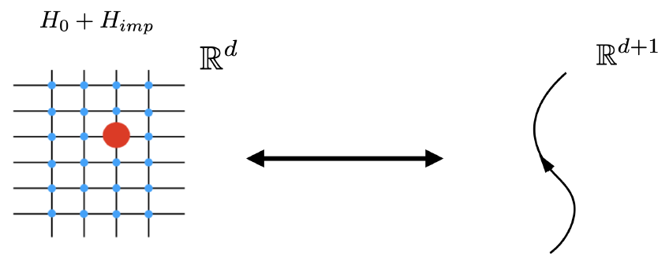

Publications
My publications can be found on Inspire Hep and Google Scholar.
Selected PDFs

Line Defects and the Renormalization Group (PDF)

A focused analysis of line defects and their RG behavior.
Selected publications
- Full list on InspireHEP
- Line defects and the Renormalization Group — selected results on defect RG (PDF available above).
- Lecture notes on QFT — pedagogical notes and review material (PDF).
BibTeX
You can export BibTeX entries from InspireHEP or Google Scholar for citations. Example placeholder:
@article{komargodski_example,
author = {Z. Komargodski et al.},
title = {Example Title},
journal = {Journal Name},
year = {2020},
doi = {10.0000/example}
}